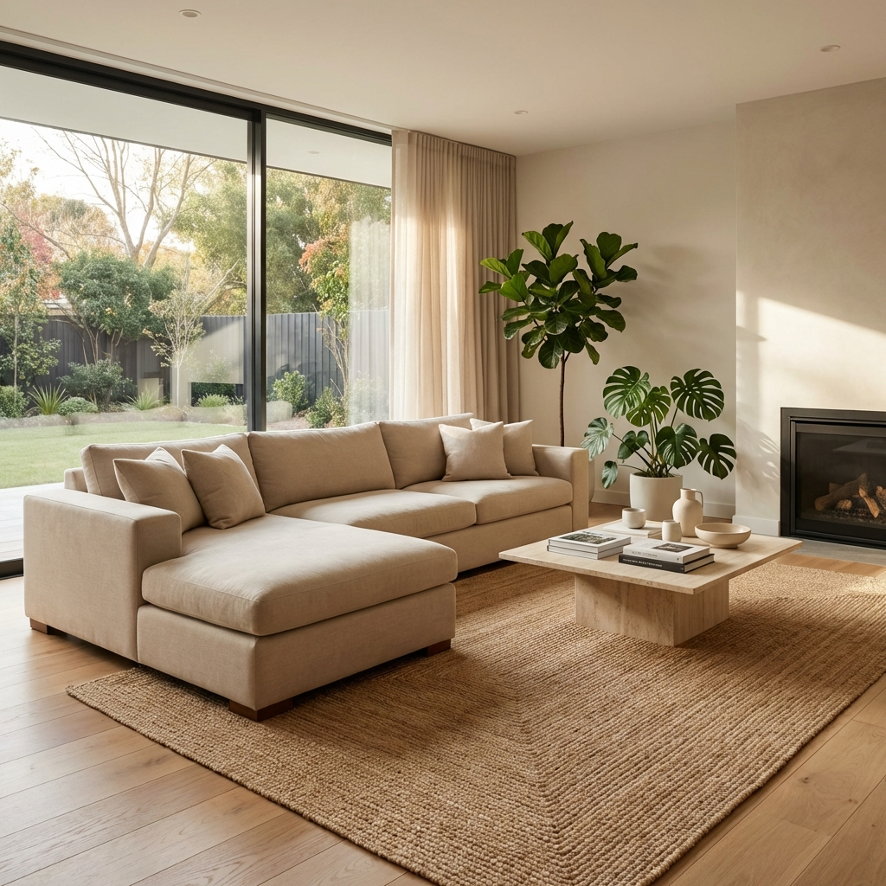
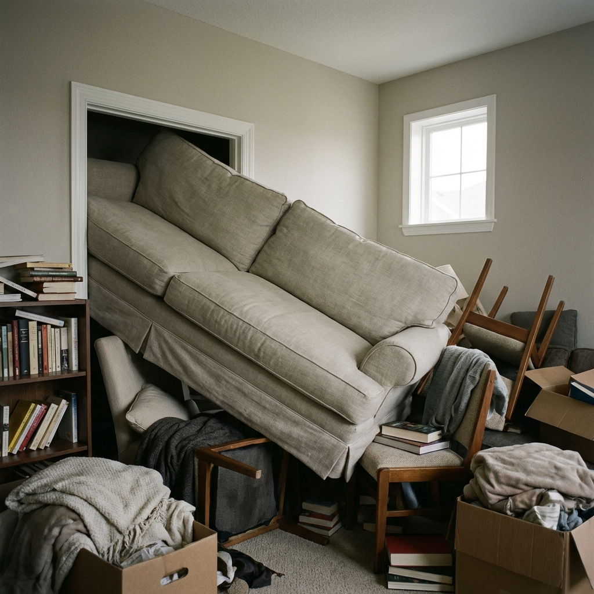
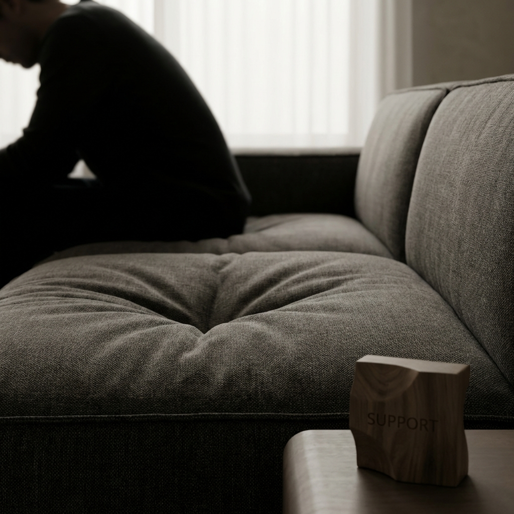
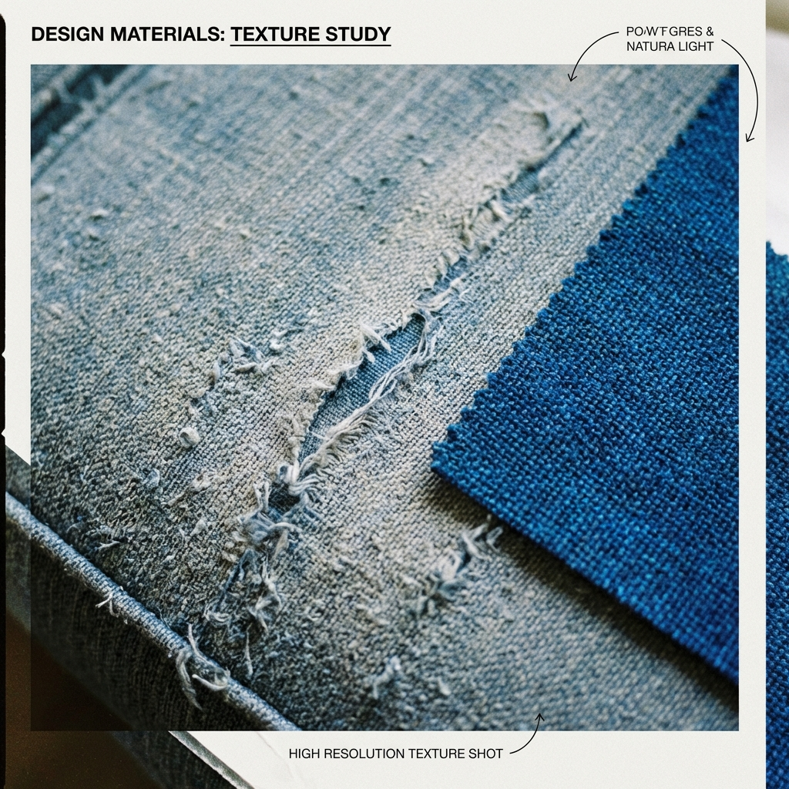
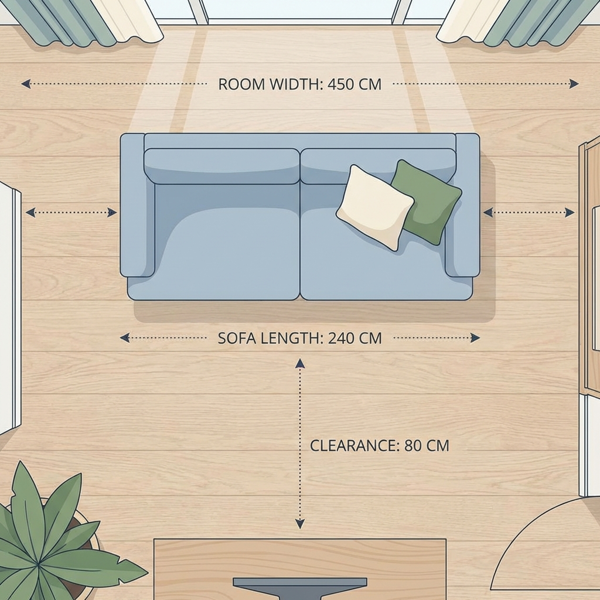
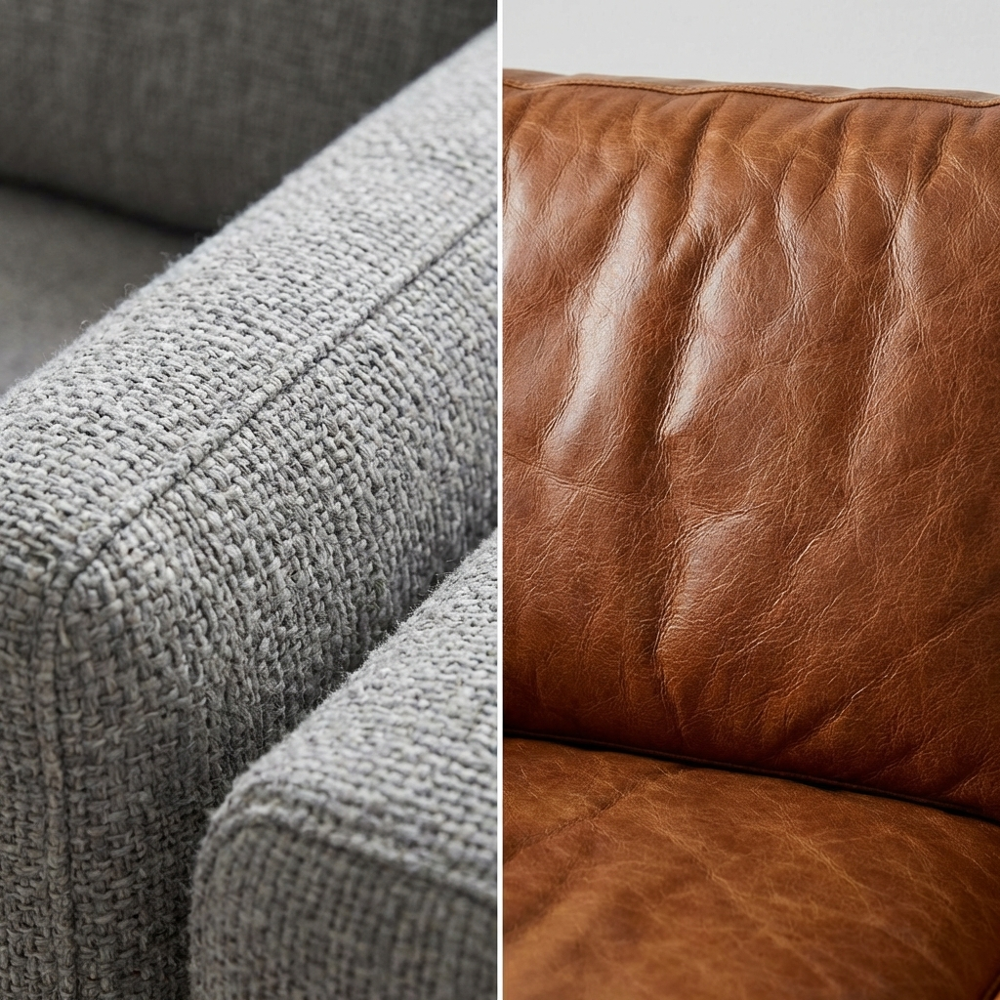

後悔しない、一生モノを選び抜く。
リビングの主役であり、家族の時間を刻む場所。
だからこそ、妥協のない選択を。
デザインの美しさと、心身を預けられる機能性。
その両立を叶えるためのガイドラインです。
「なんとなく」で選ばない。よくある3つの失敗を深掘りします。

最大の失敗は、ソファの「外寸」だけを見て、周囲の「歩くスペース（動線）」を忘れることです。
Check: 横幅だけでなく、アームの太さも重要。アームが太いと座るスペースが狭くなり、逆に細いとコンパクトでも広く座れます。

「柔らかい＝快適」とは限りません。長時間座るなら、体圧を分散する内部構造が不可欠です。
Check: 数年でヘタってしまうのは低密度ウレタンが原因。高反発ウレタンやポケットコイル内蔵モデルなら、理想の姿勢を長く維持できます。

ペットの爪、お子様の食べこぼし。憧れの素材が必ずしもあなたの生活に合うとは限りません。
Check: 最近では「引っ掻きに強いファブリック」や「水だけで汚れが落ちる加工」が施された高性能素材が人気です。用途に応じた選択を。

コンパクトなリビングや一人暮らしに。二人で座ると少し距離が近くなる、親密なサイズ感です。
大人二人がゆったり座れる、もっとも汎用性の高いサイズ。間にクッションを置く余裕もあります。
一人が横になって寝ても十分な広さ。家族が集まるリビングの主役に最適です。
座り心地を左右する「中身」のテクノロジー。
一つ一つのコイルが独立して体を支えるため、横揺れが少なく、ベッドのような上質な座り心地を実現します。
耐久性に優れ、程よい反発力が特徴。しっかりと硬めの座り心地を好む方におすすめの構造です。
包み込まれるような柔らかさ。空気を含ませることで、何度でもふっくらとした形に戻る天然素材です。
Pet-Friendly - ペット対応
猫の爪が入り込みにくい高密度な織りや、起毛を抑えた特殊ファブリック。大切な家族（ペット）との共生をサポートします。
Easy Clean - メンテナンスフリー
繊維一本一本にナノレベルの加工を施し、コーヒーや油汚れも水だけで拭き取れる最新素材。汚れを気にせず、白や淡い色を楽しめます。
Genuine Leather - 育てる楽しみ
使い込むほどに馴染み、味わいが増す本革。定期的なオイルケアを一つの「愉しみ」と感じる、大人の選択。

あなたの「過ごし方」に最適な形を。
座面が深く、アーム（肘掛け）が低い、または無いタイプがおすすめ。
ソファーの上で自由な姿勢を取れる「デイベッド」のような使い方が可能です。
背もたれが高い「ハイバック」や、脚を伸ばせる「カウチソファ」が最適。
首まで支えられることで、長時間の視聴でも疲れ知らず。
よくある質問
お手入れのしやすさで選ぶなら？
「カバーリング仕様」のファブリックタイプがおすすめです。汚れたらカバーを外してドライクリーニングが可能です。
搬入できるか不安です
背もたれが外れる「ノックダウン構造」のモデルも多数ございます。まずは搬入ガイドをご確認ください。
見えない部分にこそ、本質は宿る。
私たちは国内の提携工房と協力し、フレームの木材選定から縫製の一針に至るまで
徹底した品質管理を行っています。
ただの道具ではない、愛着の湧くパートナーとして。
¥180,000
¥320,000
¥145,000